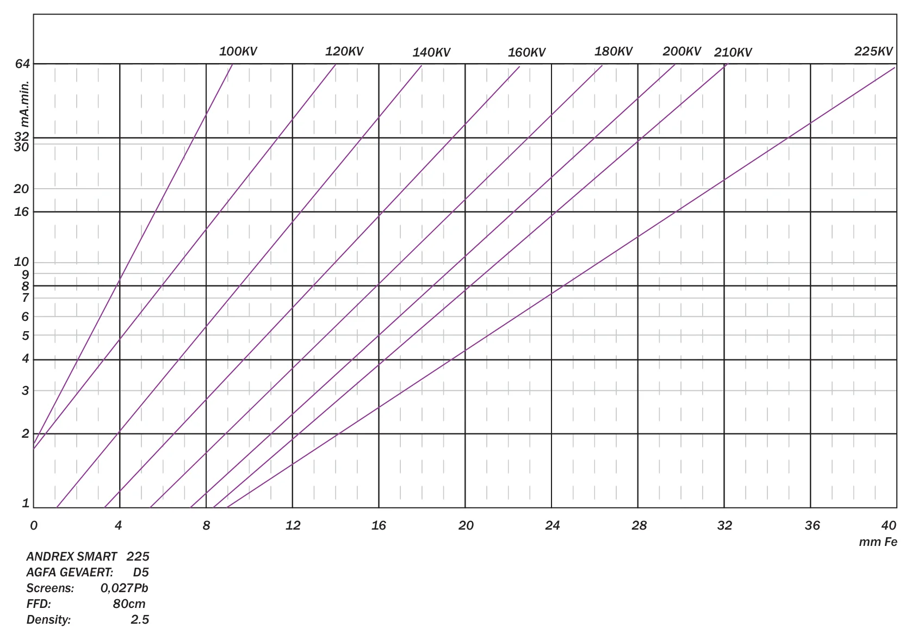
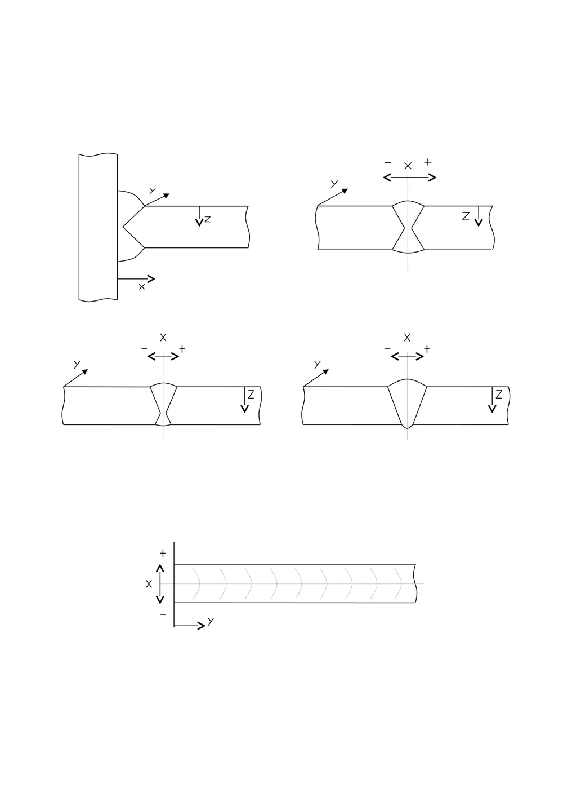

WERKBLAD
Belichting berekenen
Een onderzoeksberekening op basis van traceerbare grafieken.
Wat ga je schieten?
2 × wanddikte is uitsluitend een nominale benadering voor dubbelwandige opname. De werkelijke stralingsweg, techniek, IQI en het aantal opnames hangen af van geometrie en toepasselijke procedure.
Kies de isotoop
Kies de röntgenbuis
COMET · automatische grafiekinschatting
Kies een COMET-model.
EVO 225DS · vijf fabriekscurves, grafisch benaderd
Alleen beschikbare kV-waarden en Fe-dikten.
Niet metrologisch gevalideerd; geen vrijgegeven opnametijd.
Dikte = doorstraalde dikte Fe volgens gekozen RT-techniek; bij dubbelwandige opnames kan deze afwijken van de nominale wanddikte. Gebruik geen curve buiten het gemarkeerde bereik.
Kies een apparaat of isotoop om de ondersteunde condities te bekijken.
Vul de gegevens in
Gamma: D4 vanaf 1,4 (Se-75) of 1,5 (Ir-192); D5/D7 vanaf 1,5; maximaal 3,9. Buiten de getoetste film- en staaldiktegebieden geen gamma-uitkomst. X-ray heeft eigen grenzen. Controleer ook de procedure- en filmviewergrenzen.
De materiaalomrekening wordt getoond na het kiezen van materiaal en energie. Werkelijke doorgedrongen dikte, niet automatisch wanddikte.
Controleer de bron, de activiteit en de datum met het originele certificaat.
IQI / zichtbare draad
Kies de werkelijke opnametechniek en IQI-positie. De eis is onafhankelijk van de geschatte belichtingstijd.
Controleer de werkelijke stralingsweg en hoek; 2 × t is niet altijd de werkelijke doorstraalde dikte.
SWSI: nominale wanddikte t uit het veld hierboven. Dubbelwandig: vul de werkelijk doorstraalde dikte w in, rekening houdend met de stralingshoek.
Praktijktest registreren · gemeten zwarting en IQI
Na een gecontroleerde opname kun je de gemeten filmzwarting en de IQI-waarneming noteren. Dit vergelijkt resultaten, maar corrigeert of valideert de belichtingscurve niet automatisch.
Nog geen controle opgeslagen.
Selecteer opnameklasse, techniek en IQI-positie.
Controlehulpmiddel: bevestig de eis met je geldige procedure en norm. De zichtbaarheid op de film moet daadwerkelijk worden vastgesteld.
Controle van RT-instellingen
Deze controle leest je bestaande X-ray- of isotoopinvoer. Geen extra grafiekpunten. Alleen resultaten binnen de bestaande brongegevens; buiten het bereik wordt niet gegokt.
Een grafiekuitkomst is een eerste onderzoeksinschatting, geen vrijgegeven belichtingstijd. Gebruik je goedgekeurde RT-procedure, stralingsbeschermingsplan en controleer filmzwarting en IQI na de opname.
Controlepunten vóór een opname
De checklist verleent geen toestemming om apparatuur te bedienen.
GEREEDSCHAP
Bronnen & verval
Controleer de activiteit van een gamma-bron aan de hand van het certificaat.
Het bronverval is een afzonderlijke wiskundige berekening; het bewijst geen juiste filmzwarting of beeldkwaliteit.
Bronverval op certificaatdatum
Wiskundige prognose; gebruik de activiteit op de juiste referentiedatum. Controleer het originele broncertificaat.
Geometrische onscherpte (Ug)
Afzonderlijke geometrische controle: Ug = bronafmeting × object-filmafstand / bron-objectafstand. Geen normvrijgave.
Dit is géén beoordeling tegen ISO/ASME-limieten. Controleer de toepasselijke procedure en werkelijke geometrie.
Controle vóór berekening
HERLEIDBAAR
Grafieken & dekking
Welke onderzoeksgegevens zijn beschikbaar — en waar blokkeren we?
D4, D5 en D7 voor Se-75 en Ir-192. Niet voor echte RT-belichtingen vrijgegeven.
Open interactieve curveatlasOpen curveatlas als PDFGrafiekvoorbeeld
Tik op de curve om mm en Ci·h of mA·min af te lezen.
Alleen invoer wordt overgenomen. Bereken zelf opnieuw en controleer de procedure; geen vrijgave.
Gegenereerd uit gedigitaliseerde onderzoeksdata; geen onafhankelijke validatie.
Herkomst & rechten
De data zijn afgeleid van fabrikantsdocumenten. Controleer toestemming voor publiek hergebruik; dit is geen OEM-goedkeuring.
Bekijk herkomstbestandRT LEVEL 3 · CONCEPT / WERKHULP
IQI & filmverdeling
Kies een norm en een opnametechniek. Bekijk de vereiste draad en een theoretische filmindeling. Geen vrijgegeven werkprocedure.
1. Welke procedure geldt?
2. Om de hoeveel cm moet ik film plakken — waar ligt het middelpunt?
Voer de bruikbare filmlengte en de grootte van het werkstuk in. De app toont per film het begin, het MIDDELPUNT en het eind in cm vanaf het 0-punt. Voor rondlassen meten we over de buitenomtrek (niet dwars door de buis).
Een theoretische filmverdeling is GEEN bepaling van het minimale aantal exposures. Bij ISO MME 3/4/7 gelden aparte nomogrammen, bij 6A/6B andere opname-eisen. Controleer de resultaten altijd aan de praktijkgeometrie en de getekende filmmap.
3. Controle vóór RT
Correcte procedure, revisie, objectsoort, klasse en acceptatie-eisen geselecteerd
Buitendiameter, enkelwandige dikte en doorstraalde dikte gecontroleerd
IQI-positie, materiaal en vereiste zichtbare draad bevestigd
Overlappen, markeringen, registratie en volledige dekking op film aangetoond
Minimaal aantal exposures apart bepaald met normgrafieken, geometrie en SFD
Stralingsveiligheid volgens bedrijfsvoorschrift en wettelijke regels
Bronnen: MM 00102 E r04; MM 18100 E r22; MM 11400 E r23. Een ASME-gietstukprocedure is geen ASME-lasprocedure. Alle uitkomsten vereisen RT Level 3-controle en formele vrijgave.
Open conceptwerkinstructie (PDF)Automatisch advies: DWDI, IQI en opnames
Bij dubbelwandige opnames is 2 × t de nominale referentie voor de doorstraalde dikte. Bij een schuine opname kan de werkelijke stralingsweg groter zijn.
MM 18100 E r22 §11.4.7 en §12. Bij ontbrekende geometrie of normvoorwaarden blijft dit een advies, geen definitief opnameschema.
PRAKTIJKHULPMIDDELEN
Tabellen & naslag
Originele bronnen, geen vrijgave voor belichting.
Nieuwe RT-procedurehulp
Welke IQI-draad en hoe verdeel je de films langs een las? ISO-lassen en ASME-gietstukken apart.
Buismaten · NPS / Schedule
—
Zwartingsfactor · historische tabel
—
AGFA STRUCTURIX · filmklassen
Originele belichtingsgrafieken
—
COMET ECO / EVO — officiële belichtingsgrafieken
14 fabrikantdocumenten. Selecteer het exacte apparaat en open het originele productblad met de Fe-grafiek. Internetverbinding vereist.
ALLEEN NASLAG — GEEN VRIJGEGEVEN BELICHTINGSBEREKENING
D7-type + Pb · Fe · typische grafiekcondities 700 mm FFD en D = 2,0. Controleer de PDF van het gekozen model.
Open het Comet-productblad (PDF) PDF-link werkt niet? Open het officiële Comet Download Center.Een fabrikantgrafiek is nog geen gevalideerde digitale belichtingscurve. Voor automatische belichtingstijden zijn gecontroleerde curvegegevens én een praktijktest/Level 3-vrijgave nodig. De app berekent voor deze Comet-modellen daarom geen tijd.
Lasdetailschetsen

Lasprocessen (oude ISO 4063-lijst)
Brongegevens en rechten
PROVENANCE.mdFabrikantdocumenten en normen
Voor een apparaat zonder afzonderlijk gecontroleerde digitale curve bieden we het officiële fabrikantdocument, maar geen verzonnen automatische belichtingstijd.
Fabrikant-PDF's blijven externe links; niet gekopieerd naar de openbaar te publiceren app. Gebruik de originele normedities en tekeningen voor vrijgave.
LOKAAL
Onderzoeksrecords
Alleen op dit apparaat opgeslagen. Geen vrijgegeven RT-opnameverslagen.
WERKGEREEDSCHAP · 3.8.2 BETA
RT Tools
Geometrie, filmberekeningen, radioactief verval, bronbeheer, conversies en veiligheidschecks. Alle invoer blijft op dit toestel. Formules en hun beperkingen staan bij iedere tool.
Let op: Voor röntgen- en gamma-belichtingstijden gebruik je Rekenen. Stralingsveiligheid, zonering en afscherming moeten altijd worden vastgesteld volgens de vergunde werkwijze, door bevoegd personeel en met metingen op locatie.
Belichting & geometrie
🎯 Snelkeuze schiettechniek 6A / 6B (ISO)
Volgens jouw MM 18100 E r22 §11.4.7. Alleen voor kleine buislassen met buitendiameter ≤100 mm. Dit is een opnameadvies voor MME 6, geen automatische normvrijgave.
Bij DWDI 6A/6B hoort de IQI normaal aan bronzijde. Filmzijde alleen na afspraak tussen partijen; bij filmzijde is de loodletter F nodig. De nominale doorstraalde dikte is 2 × t; bij schuine stralingsrichting kan de werkelijke weg groter zijn. Controleer schietrichting, filmdekking en IQI altijd tegen de originele procedure.
📚 IQI- en schiettabellen: welke norm geldt?
ISO-lassen: MM 18100 E r22 met ISO 17636-1:2022 en draad-IQI volgens ISO 19232-1. De tabel 'NF EN 462-1' uit de NDT Radio-screenshot is een oudere referentie, geen vervanging voor de tabellen per klasse, techniek en IQI-positie.
ASME-gietstukken: MM 11400 E r23 / ASTM E747. ASTM E747-24 regelt de draad-IQI; de vereiste zichtbare draad volgt uit de toepasselijke ASME-procedure. Gebruik de gietstuk-IQI-tabel niet automatisch voor ISO-lassen.
Schiettechniek: de opnameschema's 4/5/6 en panoramisch op NDT Radio zijn niet universeel toepasbaar. Voor MME 6A/6B gebruiken we je eigen §11.4.7; voor MME 3/4/7 blijven de normnomogrammen en SFD vereist.
Tijd overzetten: de TRACE NDT-formule is al aanwezig onder 'Belichting overzetten' hieronder; geen dubbele calculator.
📐 Geometrische onscherpte en minimale FFD
Ug = f × b / (FFD − b). f is effectieve bron-/focusgrootte, b object-tot-film, FFD bron-tot-film. Voor geometrische minimumwaarden altijd de gekozen norm en procedure controleren.
Geen normatieve vrijgave: focusafmeting, geometrie en classificatie moeten kloppen.
🎞️ Filmposities / IQI / opnametechniek
De bestaande app heeft al een aparte proceduremodule met ISO/ASME, IQI, filmoverlap, buitenomtrek en filmmiddenpunten. Die blijft beschikbaar zonder dubbel rekenmodel.
Filmverdeling is niet hetzelfde als het vereiste aantal belichtingen.
🔁 Belichting overzetten naar andere afstand of activiteit
Alleen bij hetzelfde isotoop, exact dezelfde staaldikte, film, schermen, zwarting en opnametechniek. t₂ = t₁ × (d₂/d₁)² × (A₁/A₂).
Geen correctie voor andere materiaaldikte, kV, films of zwarting. Niet toepassen op röntgenbronnen met veranderende buisoutput.
🧪 Zwartingscorrectie met twee gemeten filmwaarden
Bij twee echte proef-/productiemetingen van dezelfde filmverwerking schatten we de belichting op basis van een rechte lijn tussen D en log₁₀(t). Er wordt uitsluitend geïnterpoleerd.
Zonder twee betrouwbare metingen of sensitometrische fabrieksgegevens berekent dit onderdeel géén fictieve correctiefactor voor D=2,8.
🔎 Waygate-vergelijking van Se-75
Jouw twee gecontroleerde schermvergelijkingen; geen automatische herkalibratie van de hele curve.
Referentie: Se-75, 40 Ci, D4, 800 mm, D=2,0. Waygate is hier een vergelijkingspunt, niet onafhankelijk gecertificeerde opnamevalidatie.
Bronnen & administratie
☢️ Bronverval en activiteit op datum
A(t) = A₀ × 2^(−Δdagen / T½). Halfwaardetijden: Se-75 119,79 d, Ir-192 73,827 d, Co-60 1925,28 d.
Gebruik de werkelijk gecertificeerde activiteit en datum; een bronwissel is niet in het vervalmodel opgenomen.
📅 Bronwisselplanner / activiteitsgrens
Berekent wanneer een bron volgens exponentieel verval onder een door jou gekozen activiteitsgrens komt; dit is geen verplicht onderhouds- of wisseladvies.
🗂️ Broninventaris (alleen lokaal)
Een persoonlijk werkregister voor bronnen. Bewaar geen gevoelige beveiligingsinformatie zoals opslaglocaties of toegangscodes. Exporteren voordat je Safari-gegevens wist.
📋 Opnameregister (bestaande records)
Berekeningen kunnen al in de app als onderzoeksrecords bewaard, geprint en als JSON geëxporteerd worden. Deze gegevens blijven los van de broninventaris.
📝 Handmatige dosisregistratie
Een optelling van zelf ingevoerde waarden. Geen vervanging voor een persoonlijke dosimeter of het officiële dosisregister.
Fysica & conversies
🔄 Activiteit, dosis en lengte omrekenen
1 Ci = exact 37 GBq = 0,037 TBq. Absorptiedosis (Gy) en equivalente dosis (Sv) zijn verschillende grootheden en worden niet één-op-één naar elkaar omgerekend.
📉 Halfwaardelaag (ideaal rekenmodel)
H/H₀ = 2^(−x/HVL). De HVL moet voor jouw stralingskwaliteit en materiaal uit een betrouwbare bron komen; geen vaste waarden worden automatisch ingevuld.
Slechts een smalle-bundel-benadering zonder opbouwfactor of verstrooiing; NIET voor afschermingsontwerp of veiligheidsvrijgave.
📏 Omgekeerde-kwadratenwet (dosistempo)
Voor een ideale puntbron in vrije ruimte: H₂ = H₁ × (r₁/r₂)². Meetwaarden op locatie hebben voorrang.
Afscherming, collimatie, secundaire straling, brongeometrie en omgeving zijn niet meegenomen. Niet voor vaststelling van de afzetting.
🔬 Ruimtelijke resolutie / duplexdraad (hulp)
Basale ruimtelijke resolutie wordt bij duplexdraadsystemen vaak benaderd met de maat van het kleinst nog onderscheiden draadpaar. Controleer de toepasselijke norm en het werkelijke duplexdraadnummer.
Geen automatische normconformiteit; pixelrespons, detector-/film-MTF en de gebruikte norm zijn niet beoordeeld.
Stralingsveiligheid · voorbereiding
🚧 Vaste zonering — veiligheidscheck
Gebouwafscherming, gebruikspatronen, bezettingsfactoren en vergunde grenswaarden kunnen niet uit alleen activiteit en afstand worden vastgesteld. Gebruik een ontwerp, risicoanalyse en meetsurvey van de deskundige stralingsbescherming.
🚧 Mobiele zonering — veiligheidscheck
Op elke werkplek zijn de toepasselijke bedrijfsprocedure en vergunning leidend. Een softwareafstand vervangt nooit de gemeten grens.
Een afgevinkte checklist is geen automatische veiligheidsvrijgave.
Basic RT PRO 3.8.2 is een onderzoeks- en werkvoorbereidingshulpmiddel, geen besturing van apparatuur, geen vergunning en geen gecertificeerd veiligheids- of dosimetriesysteem.
ONLINE · RT-NDO NASLAG
AI Expert
Vragen over normen, IQI, filmafwijkingen en de huidige onderzoeksberekening.
Geen RT-vrijgave. Controleer technische adviezen altijd met de geldende norm, goedgekeurde procedure en bevoegde deskundige.
Tip: Ctrl+Enter om op een computer te versturen.
Beveiligingscontrole wordt voorbereid…
Deze chat werkt alleen online. Het gesprek blijft tijdelijk op dit toestel zolang het scherm openstaat; de app slaat de chat niet op.
Verbinding instellen · Gemini via Cloudflare Worker
De Gemini API-key en Turnstile-secret staan uitsluitend in de Cloudflare Worker. Alleen deze publieke waarden worden lokaal opgeslagen.
Dit verstuurt uitsluitend relevante RT-velden naar jouw Worker en Google Gemini. Geen bronregister, opgeslagen records, persoonlijke namen of certificaatdocumenten. Op de gratis Gemini-laag kunnen gegevens voor productverbetering worden gebruikt. Uitschakelen kan.
VOORKEUREN
Instellingen
Taal, offline opslag en appversie.
De standaardrekenmodule slaat gegevens lokaal op. Als je AI Expert gebruikt, worden je vraag en optioneel geselecteerde RT-invoer via jouw Worker naar Google Gemini verstuurd.
Offline op iPhone
Open de website eenmaal met internet in Safari en kies Deel → Zet op beginscherm. Voor offline gebruik moeten de bestanden eerder zijn geladen.
Belangrijke grenzen
Deze versie vervangt geen RT-procedure, stralingsbeschermingsplan, certificaatcontrole of goedkeuring door een verantwoordelijke deskundige.